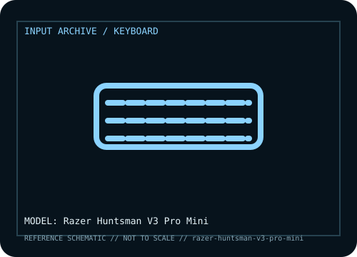

[ KEYBOARDS AND INTEGRATED POINTING DEVICES // IDENTIFIED COMPONENT ]
Razer Huntsman V3 Pro Mini
Compact analog optical gaming keyboard with per-key adjustable actuation and Rapid Trigger controls in a 60% layout.

MODEL IDENTIFICATION: Huntsman V3 Pro Mini; 60% US/region layout; not the TKL model. Verify the bottom label, regional SKU, receiver, and revision against the sources before repair or compatibility claims.
Model specifications
| Catalog subcategory | Keyboards and integrated pointing devices |
|---|---|
| Form factor / layout | 60% compact format omits the dedicated function row, arrow cluster, and navigation block; secondary functions are accessed through layers. Regional key layouts vary. |
| Key mechanism / controls | Razer Analog Optical Switch Gen-2 design with adjustable actuation and Rapid Trigger support; use model-specific configuration software to set thresholds. Optical analog behavior is not equivalent to a conventional contact switch. |
| Wired protocol | Wired USB-C connection to host; it has no 2.4 GHz receiver or Bluetooth typing mode. Standard key input is carried over USB. |
| Wireless protocol | None. USB-C cable required for host data and power. |
| Host compatibility | USB typing is compatible with hosts that support standard keyboard input. Windows is required for the full supported Synapse configuration / analog tuning experience; layer behavior, macros, lighting, and actuation settings may differ without Synapse. |
| Configuration / software | Razer Synapse configures supported actuation, Rapid Trigger, profiles, and lighting. Store/backup profiles as supported, and do not flash firmware intended for Huntsman V3 Pro TKL or Huntsman Mini (non-Pro). |
| Revision / service caveat | This is the Huntsman V3 Pro Mini 60% model; the similarly named V3 Pro TKL is a different physical layout and product record. Confirm underside SKU and firmware before servicing. |
Preservation and service notes
Record the unit label, keyboard layout, switch option, cable or matched receiver, host OS, and test mode before troubleshooting. For wireless models, distinguish Bluetooth pairing from proprietary receiver operation; for wired models, verify that the USB connection carries data rather than power only.
Keep saved layouts and firmware with the exact model/revision. Disconnect power before switch or keycap service, use manufacturer-safe cleaning methods, and do not infer a unit’s configuration from a broad product-family name.
Manufacturer and independent references
- Razer — Huntsman V3 Pro Mini product pagePrimary manufacturer product reference for identifying this model and its stated feature set.
- RTINGS — Razer Huntsman V3 Pro Mini reviewAdditional manufacturer documentation or independent model-specific testing; consult the revision/region applicable to the physical unit.
Product pages and support resources can change. Preserve the applicable manual or page revision when documenting a particular keyboard.